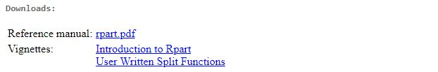

用R实现各种分析任务需要学习不同的R包。学习R包的同时需要结合统计理论。因此仅仅看帮助文档和用户手册（Reference manual）是不够的。作为学习R包的重要资源，小品文（Vignettes，或翻译为简介）将统计理论、代码与示例相结合，是学习R包和其中思想的好材料。下文讲解如何使用vignette和browseVignettes两个函数获取R包的官方小品文。
在CRAN上发布的R包往往会有一个官方主页。在搜索引擎中键入R rpart或CRAN rpart便能够找到此包主页。
rpart的官方主页如下所示：

其中，Downloads一栏下便有用户手册和小品文的下载按钮，点击即可下载。

这种方法其实多此一举了！
由于R在下载程序包时，已将小品文下载下来。我们可以使用utils包(这个包含许多有用函数的包不需要加载)中的vignette函数自动提取小品文。但首先我们需要提取R包的小品文名称，代码如下：
vignette(, package = "rpart")输出结果如下所示：
Vignettes in package ‘rpart’:
longintro Introduction to Rpart
(source, pdf)
usercode User Written Split
Functions (source, pdf)可以发现，rpart包有两篇小品文，《Introduction to Rpart》和《User Written Split Functions》。分别简称为“longintro”和“usercode”。现在，就可以根据简称提取小品文了，输入：
第一篇《Introduction to Rpart》的pdf便会自动跳出：

然后便可以阅读了。这里更推荐使用browseVignettes函数，操作更为简单。弹出的小品文列表直接点击就可以阅读：
browseVignettes(package = "rpart")很多R包的小品文是PDF版本，当然还有的是html形式的，如ggplot2的小品文：
vignette("ggplot2-specs", package = "ggplot2")